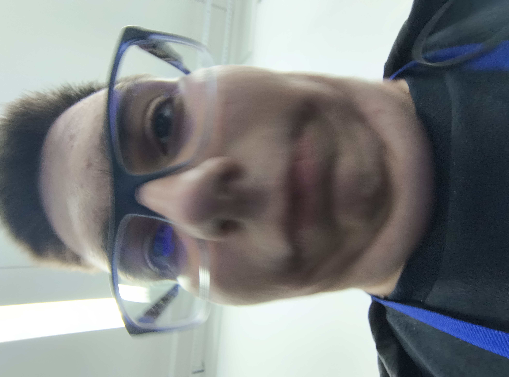
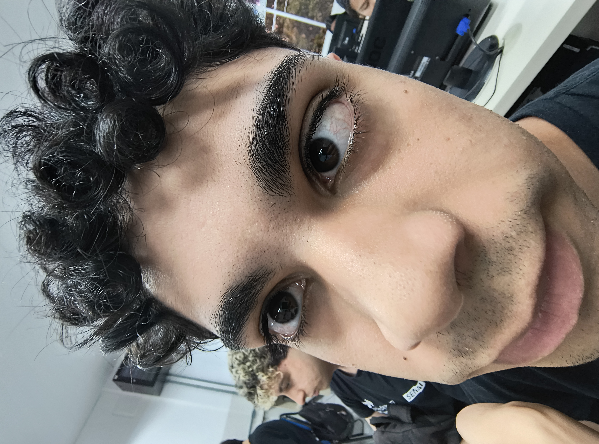

nada aqui
1. Verifique que o papel esteja seco.
2. Certifique-se de retirar clipes e grampos.
3. Separe papéis recicláveis dos não recicláveis.
4. Encontre um Ponto Limpo proximo de você e descarte.
1. Lave para remover resíduos.
2. Amasse para economizar espaço.
3. Encontre um Ponto Limpo proximo de você e descarte.
1. Lave os itens plásticos para remover restos de alimentos ou líquidos.
2. : Identifique os plásticos recicláveis e separe-os dos não recicláveis.
3. Compacte itens volumosos para otimizar o espaço de armazenamento.
4. Encontre um Ponto Limpo proximo de você e descarte.
1. Verifique que o papelão esteja seco e limpo.
2. Certifique-se de retirar fitas e grampos.
3. Dobre e compacte para ocupar menos espaço.
4. Encontre um Ponto Limpo proximo de você e descarte.